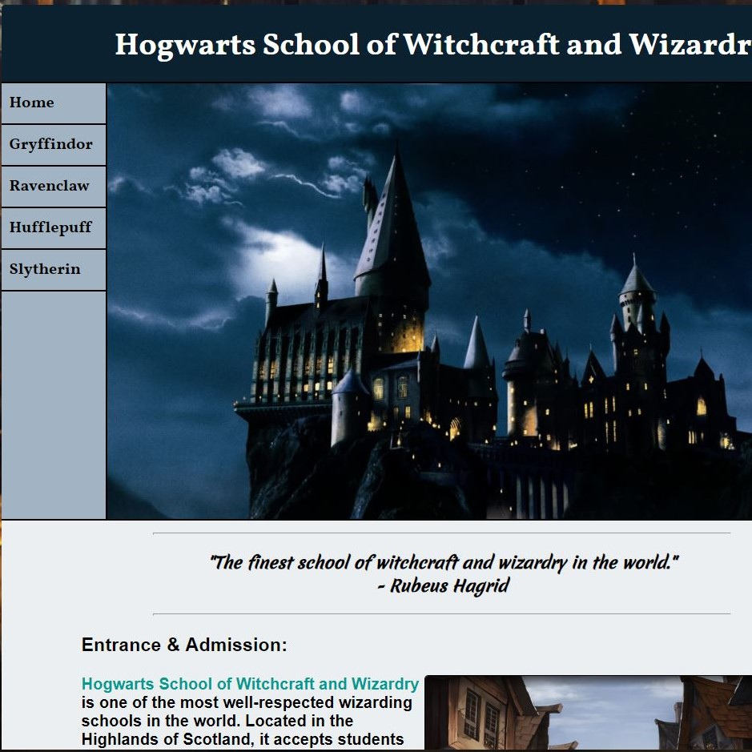
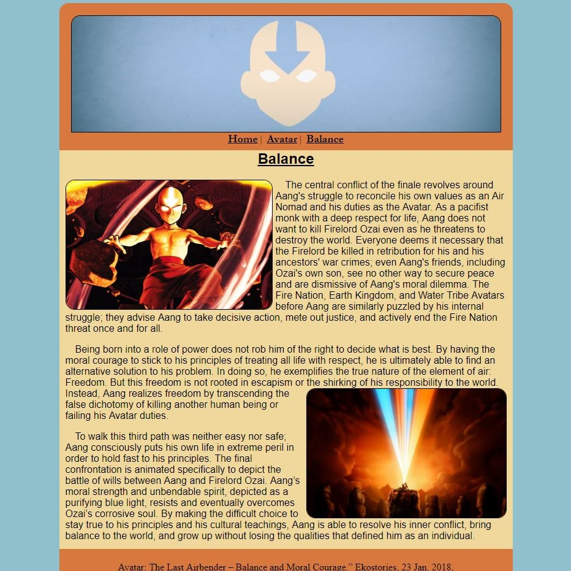

Sergio Gonzalez
Web Development
CIS 233DA - Web Development Level II Final Project
Gathering all resources and previous learnings, this project features a minimum of 5 pages, external style sheet shared by all pages with CSS elements styles, classes and/or IDs for all items. There is common consistent navigation among all pages. Alongside the use of psuedo-classes to show hyperlink states, the images include alt attributes, background image, adobe edge font, media queries for responsive design, and stylistic elements. Using gifs, absolute links, and an uploaded MP4 video to give the website interaction capabilities.
Check out Hogwarts School of Witchcraft and Wizardry
CIS166AE - Webscripting with PHP Final Project

The webscripting project consisted of both PHP and MySQL. The first task was to display current weather information using any weather service and gives user to search other weather climates using longitude and latitude. The guestbook allows users to write there names and leaving a comment and then stores into a database using MySQL. After leaving a comment and storing the information, the page displays all previous entries. The slideshow is a page using javascipt to slideshow a group of pictures with both titles and captions (which are also stored into a database). The contact us page allows the user to send feedback. Once the form is submitted, the email is validated using regular expressions. If a validated email is used, the page captures the subject and sends the email to proper agent. The name, email, subject, and message are all stored in database as well. Every time any action is taken, it is stored into a table in the data base and the site index task prints out only the last 15 tasks completed and displays the time and date of the action.
Check out Ryeder's Graduation
CIS 133DA - Web Development Level I Final Project

As a prerequisite to CIS 233DA, this final project was to prove my understanding of the foundation of HTML and CSS. Involving an external style sheet for each page, the assignment uses various different styles to add elements and fomrat each page as needed. Separate pages contain an embedded YouTube link, an uploaded MP4 and MP3 file, and a form with a PHP acknowledgement page.
Check out Keanu Reeves
CIS233DA - Authoring Options Project
This assignment focuses to clean coding and organization within a task. The project has an external style sheet to style all page elements and as well creates an images folder in the files panel to organize images. The project and every one since uses "linting" tools, and as well as the W3C validation tool in Dreamweaver, to review for errors and validate the code.
Check out Avatar Aang